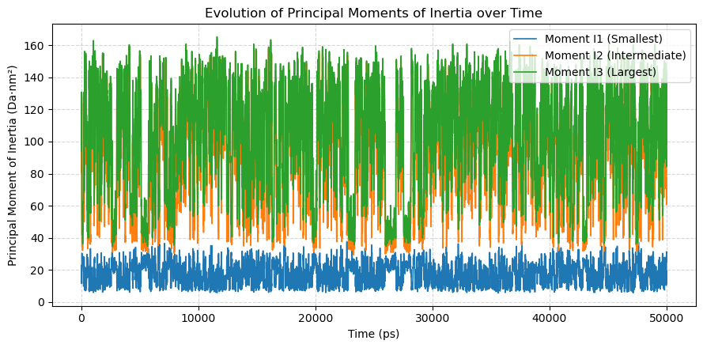

Get principal axes#
Calculating principal axes of inertia and principal moments of a molecular system.
The function molsysmt.structure.get_principal_axes() diagonalizes the inertia tensor (or geometric second-moment tensor) to compute the principal axes and corresponding moments across single or multiple structures.
Added in version 1.0.0.
API documentation
Follow this link for a detailed description of the input arguments, raised errors, and returned objects of this function: molsysmt.structure.get_principal_axes().
Basic usage#
Let’s show how to compute the geometric principal axes of an 8-corner rectangular box:
import molsysmt as msm
import numpy as np
import matplotlib.pyplot as plt
import pyunitwizard as puw
coords = np.array([[
[0.0, 0.0, 0.0],
[2.0, 0.0, 0.0],
[0.0, 1.0, 0.0],
[2.0, 1.0, 0.0],
[0.0, 0.0, 0.5],
[2.0, 0.0, 0.5],
[0.0, 1.0, 0.5],
[2.0, 1.0, 0.5]
]]) * msm.pyunitwizard.unit('nm')
We compute the principal axes and moments using molsysmt.structure.get_principal_axes():
axes, moments = msm.structure.get_principal_axes(coords)
print('Principal axes eigenvectors shape:', axes.shape)
print('Principal moments shape:', moments.shape)
for i in range(3):
print(f'Axis {i+1}: vector = {axes[0, i]}, moment = {moments[0, i]:.3f}')
Principal axes eigenvectors shape: (1, 3, 3)
Principal moments shape: (1, 3)
Axis 1: vector = [1. 0. 0.], moment = 2.500
Axis 2: vector = [0. 1. 0.], moment = 8.500
Axis 3: vector = [0. 0. 1.], moment = 10.000
Mass-weighted principal moments of inertia#
Passing weights='masses' computes the physical moments of inertia on a macromolecular structure:
molsys = msm.convert(msm.systems['chicken villin HP35']['chicken_villin_HP35.h5msm'])
axes_prot, moments_prot = msm.structure.get_principal_axes(molsys, selection='atom_type!="H"', weights='masses')
print('Protein principal moments of inertia:', moments_prot[0])
Protein principal moments of inertia: [1562.36043789 2269.1324253 2915.29026336]
Note
Demo Systems Catalog
This tutorial uses demonstration datasets provided by MolSysMT. To explore the full catalog of bundled systems, forms, and file paths, visit the Demo Systems guide.
Principal moments evolution across structural ensembles#
We calculate the principal moments of inertia along a trajectory to analyze conformational shape changes:
traj = msm.convert(msm.systems['pentalanine']['traj_pentalanine.h5msm'])
axes_traj, moments_traj = msm.structure.get_principal_axes(traj, selection='atom_type!="H"', weights='masses')
time = msm.get(traj, element='system', time=True)
time_val = puw.get_value(time, to_unit='ps')
plt.figure(figsize=(9, 4.5))
plt.plot(time_val, moments_traj[:, 0], label='Moment I1 (Smallest)', lw=1.2)
plt.plot(time_val, moments_traj[:, 1], label='Moment I2 (Intermediate)', lw=1.2)
plt.plot(time_val, moments_traj[:, 2], label='Moment I3 (Largest)', lw=1.2)
plt.xlabel('Time (ps)')
plt.ylabel('Principal Moment of Inertia (Da·nm²)')
plt.title('Evolution of Principal Moments of Inertia over Time')
plt.grid(True, linestyle='--', alpha=0.5)
plt.legend()
plt.tight_layout()
plt.show()

See also
Related Tools & References
Convert: Convert molecular systems between different forms with
molsysmt.basic.convert().Get center: Compute the geometric center or center of mass with
molsysmt.structure.get_center().Align principal axes: Align molecular principal axes with Cartesian frame axes with
molsysmt.structure.align_principal_axes().Get radius of gyration: Measure spatial extent with
molsysmt.structure.get_radius_of_gyration().